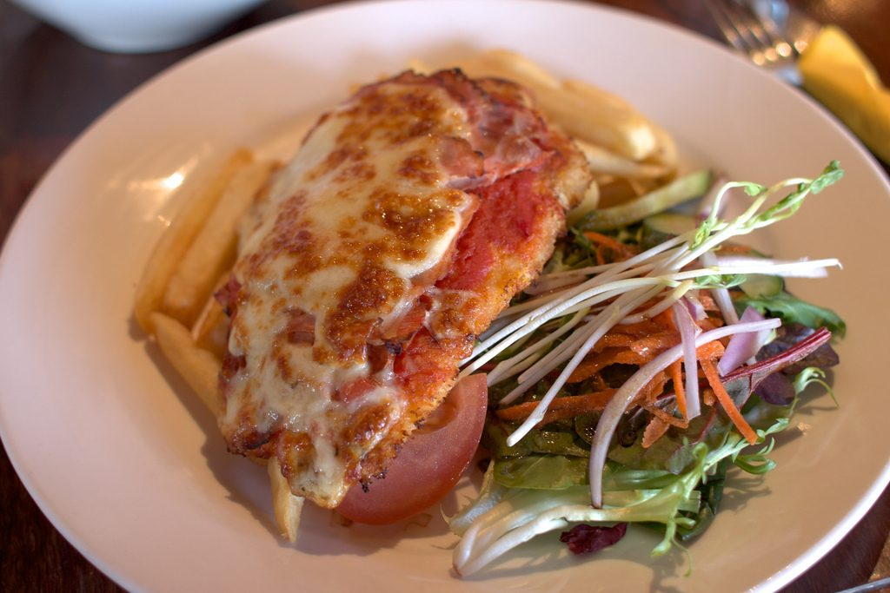

Italian · 2026-06-29
Chicken Parmesan

Chicken Parmesan, also called chicken parmigiana or chicken parm, is an Italian-American classic built from breaded cutlets, tomato sauce, mozzarella, and Parmesan. It reflects the foodways of Italian immigrant communities in the United States, where parmigiana-style sauced-and-cheesed dishes met widely available chicken. This version follows the home-cook consensus: thin cutlets, a Parmesan breadcrumb crust, a short pan-fry for color and crunch, and a hot oven finish so the cheese melts before the chicken dries out.
Ingredients
Main Components
- 680 g (1 1/2 lb) boneless skinless chicken breasts, about 2 large breasts, split horizontally into 4 cutlets
- 6 g (1 tsp) kosher salt, plus more to taste
- 1 g (1/2 tsp) freshly ground black pepper
- 60 g (1/2 cup) all-purpose flour
- 2 large eggs, beaten until frothy
- 60 g (1 cup) panko or Italian-style breadcrumbs
- 75 g (3/4 cup) freshly grated Parmesan cheese, divided
- 60 to 120 ml (1/4 to 1/2 cup) olive oil or neutral oil, for pan-frying
For the Sauce, Cheese, and Garnish
- 360 to 720 ml (1 1/2 to 3 cups) marinara sauce, warmed, divided
- 115 g (4 oz / 1 cup) low-moisture mozzarella, shredded, or fresh mozzarella cut into small pieces
- 55 g (1/2 cup) provolone, shredded, optional but recommended
- 8 g (1/4 cup) fresh basil leaves, torn or chopped
- 10 ml (2 tsp) olive oil, for finishing
- Cooked spaghetti, garlic bread, or a green salad, for serving
Substitutions:
- Panko breadcrumbs -> Italian-style breadcrumbs for a finer, more traditional coating
- Provolone -> additional mozzarella for a milder cheese topping
- All-purpose flour -> gluten-free flour blend, paired with gluten-free breadcrumbs
- Chicken breasts -> prepared chicken cutlets, reducing pounding time
Equipment
- Cutting board and sharp knife
- Plastic wrap or a large zip-top bag
- Meat mallet, rolling pin, or heavy skillet
- 3 shallow bowls or pie plates
- Large skillet
- 9 x 13 in (23 x 33 cm) baking dish or rimmed baking sheet
- Instant-read thermometer
Instructions
Preparation (Active time: 15 min)
1
Preheat and prepare the chicken: Heat the oven to 425°F (218°C). Split the chicken breasts horizontally into 4 cutlets. Place the cutlets between plastic wrap or inside a split zip-top bag and pound to an even 1/3 to 1/2 in (8 to 12 mm) thickness. Season both sides with the salt and pepper.
2
Set up the breading station: Put the flour in one shallow bowl, the beaten eggs in a second, and the breadcrumbs plus 50 g (1/2 cup) of the Parmesan in a third. Dredge each cutlet in flour and tap off the excess, dip in egg, then press firmly into the breadcrumb mixture so both sides are evenly coated.
3
Rest the coating: Transfer the breaded cutlets to a plate or rack and let them stand for 5 to 15 minutes. This short rest helps the crust cling during frying.
Cooking (Active time: 20 min)
4
Pan-fry the cutlets: Heat 60 ml (1/4 cup) oil in a large skillet over medium to medium-high heat until shimmering. Fry the chicken in batches without crowding, adding more oil only if the pan gets dry, until deeply golden, about 2 to 4 minutes per side. The chicken does not need to be fully cooked yet.
5
Assemble for baking: Spread 180 ml (3/4 cup) marinara in the baking dish if you prefer a saucier casserole-style version, or skip the bottom sauce and use a lightly oiled baking dish for a crisper underside. Arrange the cutlets in a single layer. Spoon 2 to 4 tbsp marinara over each cutlet, keeping some crust exposed. Top with mozzarella, provolone if using, basil, the remaining 25 g (1/4 cup) Parmesan, and a light drizzle of olive oil.
6
Bake to finish: Bake until the cheese is melted and browned in spots, the sauce is bubbling, and the thickest part of each cutlet reaches 165°F (74°C), about 12 to 18 minutes. Rest for 3 to 5 minutes before serving so the juices settle and the cheese stops bubbling.
Assembly & Finishing
7
Serve: Serve hot with extra warm marinara on the side. For a classic family dinner, plate each cutlet over spaghetti; for a lighter plate, serve with Caesar salad, roasted broccoli, or a simple arugula salad.
8
Keep the crust lively: If serving over pasta, sauce the pasta separately and set the cutlet on top at the last minute rather than burying it in sauce.
Food Safety & Storage
- Minimum safe internal temperature: Cook chicken to 165°F (74°C), checked in the thickest part of each cutlet.
- Raw chicken handling: Keep raw chicken and its juices away from ready-to-eat foods. Wash hands, boards, and utensils after breading.
- Storage: Refrigerate leftovers in an airtight container within 2 hours and keep for up to 3 days.
- Freezing: Freeze cooked cutlets, preferably without pasta, for up to 2 months. Wrap tightly and thaw overnight in the refrigerator.
- Reheating: Reheat uncovered in a 375°F (190°C) oven or toaster oven until hot and re-crisped. Add a spoonful of sauce before reheating if the chicken seems dry.
Serving Suggestions
- Serve with spaghetti, rigatoni, garlic bread, Caesar salad, roasted asparagus, or sauteed green beans.
- Pair with sparkling water with lemon, iced tea, Chianti, or a medium-bodied red table wine.
- Traditional serving style: a sauced breaded cutlet under melted cheese, either plated as a main dish, set over pasta, or tucked into a toasted roll as a chicken parm sandwich.
Scaling Notes
Half recipe (1/2x): Use 2 cutlets, 1 egg, and a smaller skillet or quarter-sheet pan. Baking time stays about the same.
Double recipe (2x): Fry in batches and bake on two sheet pans or in two baking dishes. Rotate pans halfway through baking and check each cutlet for 165°F (74°C).
Chef's Notes
- Sourcing: Use freshly grated Parmesan when practical; pre-grated cheese can make the crust less crisp. Choose a thick, flavorful marinara because the sauce is a major seasoning.
- Make-ahead: Bread and pan-fry the cutlets up to 1 day ahead, then refrigerate. Top with sauce and cheese just before baking, adding a few extra minutes from cold.
- Variations: Add 1/2 tsp dried oregano or Italian seasoning to the breadcrumb mixture, or use fontina in place of provolone for a softer melt.
- Common pitfalls: Thick cutlets cook unevenly, crowded pans steam instead of brown, and too much sauce can soften the crust. Pound evenly, fry in batches, and serve extra sauce on the side.
Nutrition Information (Optional)
Per serving: approximately 500 kcal
- Protein: 43g | Fat: 24g | Carbohydrates: 28g | Fiber: 2g
Sources
- Allrecipes, Chicken Parmesan by John Mitzewich: https://www.allrecipes.com/recipe/223042/chicken-parmesan/
- Natasha's Kitchen, Chicken Parmesan: https://natashaskitchen.com/chicken-parmesan-recipe/
- The Kitchn, We Tested 4 Popular Chicken Parmesan Recipes and Found a Clear Winner: https://www.thekitchn.com/chicken-parmesan-recipe-reviews-23004303
- Wikipedia, Chicken parmesan cultural and historical overview: https://en.wikipedia.org/wiki/Chicken_parmesan
- Hero image source: https://commons.wikimedia.org/wiki/File:Chicken_parmigiana.jpg
- Downloaded image file: https://upload.wikimedia.org/wikipedia/commons/1/12/Chicken_parmigiana.jpg
Version History:
- v1 (2026-06-29): Initial recipe by @Codex
Credits:
- Recipe development: @Codex, adapted from the sources listed above
- Testing: @Codex
- Verification: @Coordinator
- Photography: Tristan Kenney, Wikimedia Commons, CC BY 2.0, https://commons.wikimedia.org/wiki/File:Chicken_parmigiana.jpg
Recipe Location: /Recipe-of-the-Week/Recipes/2026-06-29_chicken-parmesan.md
Images Location: /Recipe-of-the-Week/Images/chicken-parmesan/